【零到全栈】4.5 - 看懂 Next.js：从单页应用到生产级框架
在上一节中，我们将手写的小型 React 项目推送到服务器并通过 Nginx 发布上线。然而上线后遗留了一个非常典型的隐患：在浏览器中直接访问首页并通过导航跳转一切正常，但若直接在地址栏输入 /text-lab 刷新或访问，Nginx 便会直接返回 404 Not Found。
这一现象揭示了传统单页应用（SPA）在浏览器端渲染的核心痛点。本章将深入解析客户端渲染（CSR）的运行机制与局限，全面拆解 Next.js 这一 React 生产级框架如何通过约定式路由与服务端预渲染（RSC）优雅地解决这些工程难题。
客户端渲染（CSR）机制与三大痛点
(参考时间: 02:05)
1. 浏览器的加载与渲染顺序
打开 Chrome 开发者工具的 Network（网络）面板刷新页面，可以清晰观察到客户端渲染（Client-Side Rendering, CSR）的资源加载时序：
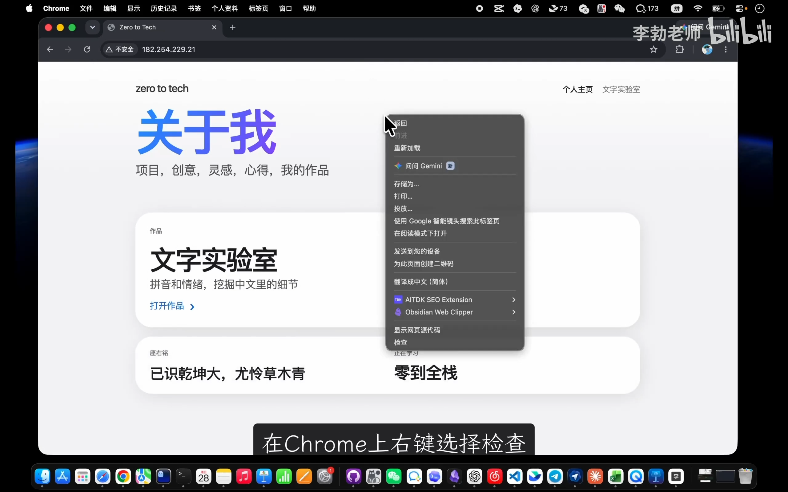
📷 Network 面板资源加载时序
在 B 站中打开 (00:02:18)
- 第一步：获取 HTML 骨架：浏览器首先向服务器请求
index.html。查看响应体可以发现，该文件除<head>引入外，<body>内部近乎空白，仅声明了一个挂载节点： ```html
``
2. **第二步：下载脚本与样式**：浏览器解析 HTML 后，发现其依赖打包生成的 JavaScript（如index-xxx.js）与 CSS 文件，继而发起二次请求。
3. **第三步：客户端运行时计算与绘制**：JavaScript 下载完毕后在用户的浏览器中执行，由 React 框架动态构建虚拟 DOM 树，再将其真实绘制并填充到#root` 挂载点中。
sequenceDiagram
autonumber
actor User as 用户浏览器
participant Nginx as 服务器 (Nginx)
participant DOM as 页面 DOM (#root)
User->>Nginx: 1. 请求 GET /
Nginx-->>User: 返回空白 index.html (<div id="root">)
User->>DOM: 解析 HTML（此时页面一片空白）
User->>Nginx: 2. 请求 bundle.js 与 bundle.css
Nginx-->>User: 返回打包静态资源
User->>User: 3. 执行 JavaScript，计算 React 组件树
User->>DOM: 4. 动态生成 DOM 并挂载展示
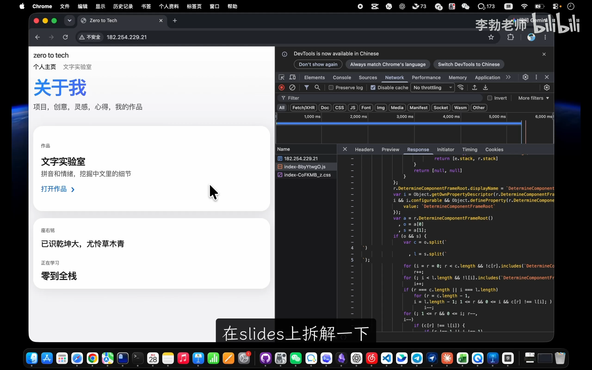
📷 PPT讲解客户端渲染时序图
在 B 站中打开 (00:03:45)
2. 传统 SPA 的三大硬伤
这种“浏览器端临时计算”的模式带来了三个不可忽视的工程缺陷：
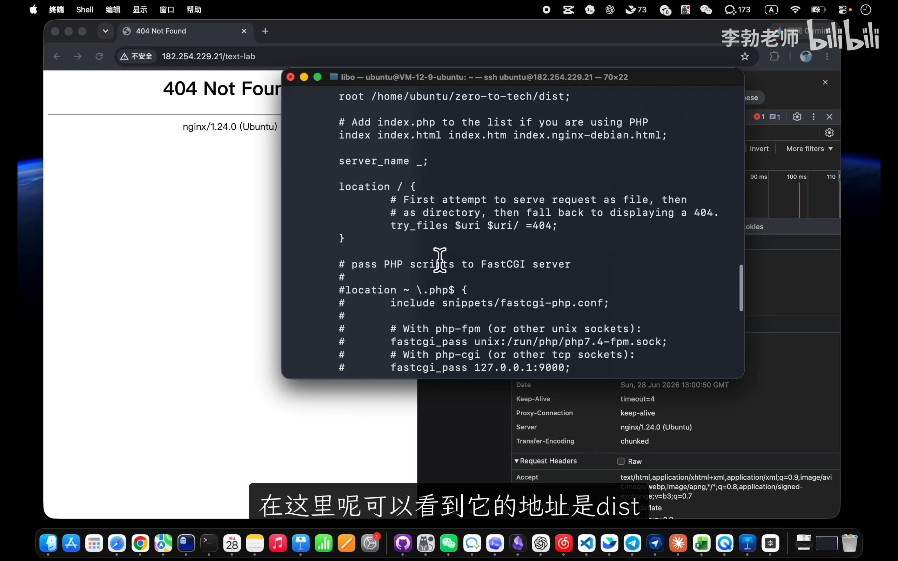
📷 Nginx在dist目录查找文件发生404
在 B 站中打开 (00:05:48)
- 深层路径直接访问 404：
- 当用户在已加载好的页面内点击导航切换到
/text-lab时，是由内存中跑起来的 JavaScript 监听 URL 变化并切换组件渲染，并未向服务器真正索取文件。 - 但若用户直接输入
http://ip/text-lab，请求首先抵达 Nginx。Nginx 会在磁盘的dist/目录下物理寻找名为text-lab的文件或目录。由于构建产物只有index.html，Nginx 找不到对应资源，自然返回 404。 - 首屏加载耗时明显：
- 页面内容必须经历“拉取 HTML → 拉取 JS → 执行 JS 渲染”三次串行阶段。若项目体积增大、引入较多依赖或网络延迟偏高，首屏白屏时间会急剧拉长。
- 搜索引擎优化（SEO）极不友好：
- Google、Bing、百度等搜索引擎的爬虫爬取网页时，大多只做一次 HTTP 请求并解析静态 HTML，不会完整等待庞大的 JavaScript 执行渲染。在爬虫眼中，这个页面仅仅是一个没有有效文本的空壳，导致网站难以被有效收录和排名。
flowchart TD
RootCause["根本病根：页面并非服务器预先存在的真实文件，而是客户端浏览器临时计算出来的"]
RootCause --> Issue1["深层路径访问 404<br/>(Nginx 磁盘物理查无此文件)"]
RootCause --> Issue2["首屏加载缓慢<br/>(串行往返请求 + 客户端执行白屏)"]
RootCause --> Issue3["SEO 抓取困难<br/>(爬虫无法执行复杂 JS，视为真空页面)"]
Sol["破局之道：预先将每一页在服务端/构建期渲染为真实的 HTML 文件摆在服务器上"]
Issue1 -.-> Sol
Issue2 -.-> Sol
Issue3 -.-> Sol
Next.js 定位与三层工程架构
(参考时间: 09:37)
1. 什么是“React 生产级框架”
面对上述痛点，如果仅依靠原生 React，开发者需要自行搭建 Node.js 服务端环境（SSR）、处理复杂的客户端 Hydration（注水）、手动配置路由系统等，工程链路极为冗杂。
Next.js 正是建立在 React 之上的“生产级框架”。它并不取代 React，而是在 React 之上补充了面向生产环境所需的全套基础设施。
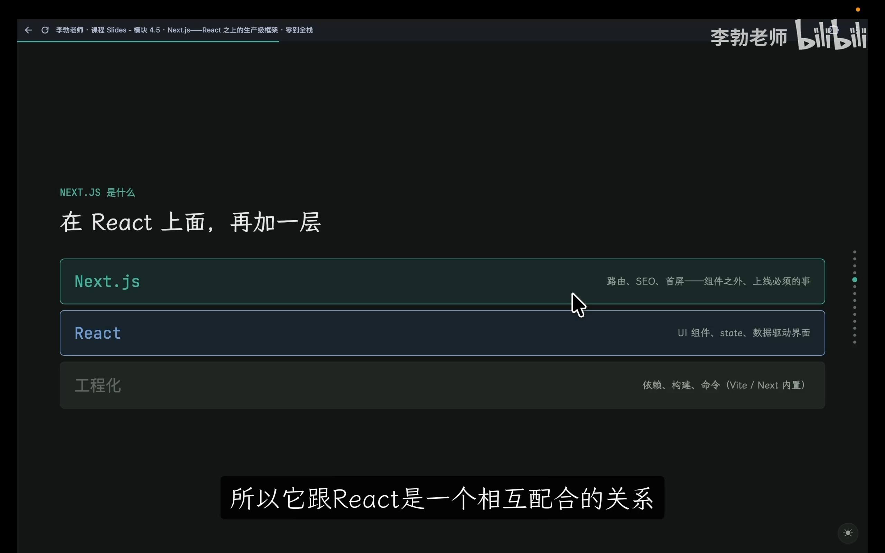
📷 PPT架构三层结构：工程化/React/Next.js
在 B 站中打开 (00:10:08)
graph TD
subgraph L3["应用与体验优化层（Next.js）"]
N1["文件约定式路由 (App Router)"]
N2["服务端预渲染 (RSC / SSG)"]
N3["SEO 优化 / 自动代码分割 / 图像优化"]
end
subgraph L2["组件与视图抽象层（React）"]
R1["声明式 UI (JSX)"]
R2["状态管理 (State / Props)"]
R3["组件生命周期与 Hook"]
end
subgraph L1["工程化与构建底层（Tooling）"]
T1["包管理器与构建命令 (npm / Node.js)"]
T2["代码打包与静态编译"]
T3["开发热更新 (Dev Server)"]
end
L3 --> L2
L2 --> L1
- 初学者理解 Next.js 的两个核心着力点：
- 约定式路由：丢弃手写路由器或手动注册配置，文件夹路径即网址。
- 服务端预渲染：在构建期或服务器端提前把页面渲染为真实的静态 HTML，让浏览器和爬虫拿到的就是带完整内容的页面。
配置文件与开发环境对比
(参考时间: 13:40)
通过将现有的 Demo 项目与引入 Next.js 后的项目并排对比，可以清晰洞察两者的工程差异：
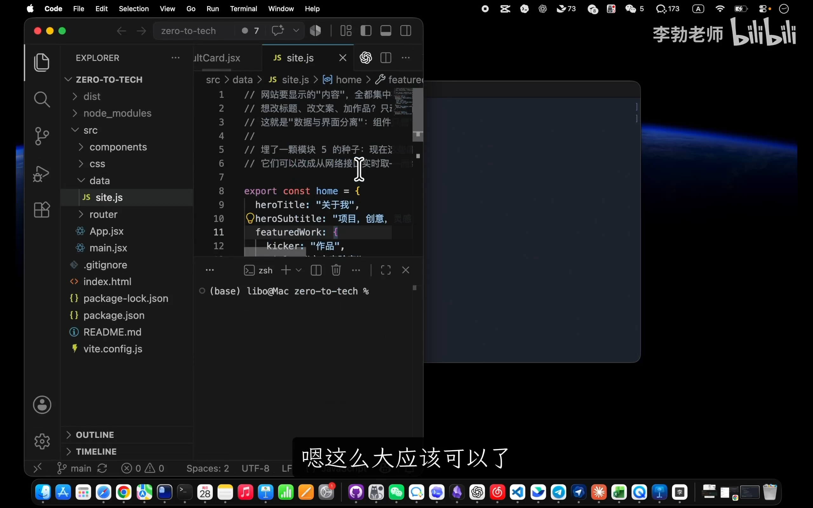
📷 对比老项目与新Demo项目文件结构
在 B 站中打开 (00:13:34)
1. package.json 脚本与依赖变动
在项目的 package.json 中，核心差异体现在依赖项与脚本调用工具的迁移：
{
"scripts": {
"dev": "next dev",
"build": "next build",
"start": "next start"
},
"dependencies": {
"next": "^14.x.x",
"react": "^18.x.x",
"react-dom": "^18.x.x"
}
}
- 构建工具接管：旧项目中执行
npm run dev背后是 Vite；而在 Next.js 项目中，底层构建被 Next.js 原生工具链整体接管。旧版用于本地静态预览的preview命令被替代为next start（用于在本地启动由next build产出的生产级服务）。 - 默认服务端口：Vite 默认运行在
5173端口，而 Next.js 默认启动在3000端口。
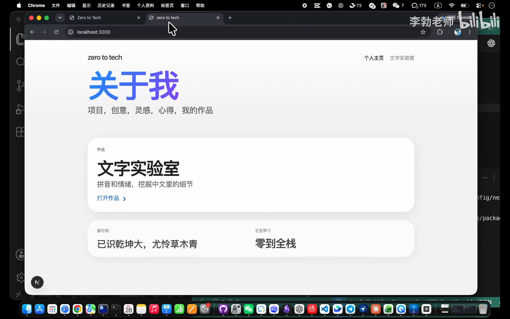
📷 运行开发服务器与左下角调试图标演示
在 B 站中打开 (00:16:14)
在运行 next dev 期间，网页左下角会显示一个黑色的 Next.js 浮动图标。若代码存在语法错误或运行时异常，该工具会直接在页面内以悬浮层精准标出错误行与堆栈信息，在辅助 AI 编程（Vibe Coding）时能极快地将报错信息复制给模型排查。
约定优于配置：App Router 路由机制
(参考时间: 17:37)
1. 目录结构与入口迁移
在旧的 Vite+React 项目中，核心代码均收纳在 src/ 目录下，并由根目录的 index.html 引导加载 src/main.jsx 与 src/App.jsx。
而在 Next.js（App Router）架构中，结构发生了关键转变：
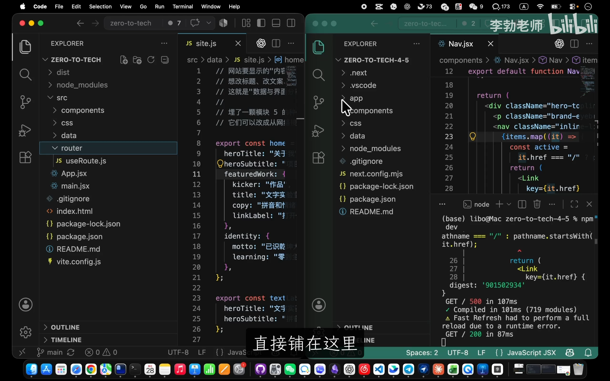
📷 对比Vite目录与Next.js的app目录
在 B 站中打开 (00:18:10)
my-next-app/
├── app/
│ ├── layout.jsx # 全局根布局（提供 HTML 基础结构与共享外壳）
│ ├── page.jsx # 根路径 (/) 对应的首页视图
│ └── text-lab/
│ └── page.jsx # (/text-lab) 路径对应的子页面视图
├── components/ # 公共组件库
├── data/ # 模拟静态数据
├── styles/ (或 css/) # 样式文件
└── package.json
flowchart LR
subgraph AppRouter["app/ 目录结构"]
RootLayout["app/layout.jsx (根布局)"]
RootPage["app/page.jsx (根页面)"]
SubDir["app/text-lab/"]
SubPage["app/text-lab/page.jsx"]
SubDir --> SubPage
end
subgraph URLRoute["浏览器访问 URL"]
HomeURL["http://localhost:3000/"]
LabURL["http://localhost:3000/text-lab"]
end
RootPage -->|自动映射| HomeURL
SubPage -->|自动映射| LabURL
2. 什么是“约定优于配置（Convention over Configuration）”
- 无需手动注册路由表：不再需要上一讲中手写的
window.location.pathname状态分发，也不用引入繁重的路由配置对象。 - 文件层级即网址层级：只要在
app/内部新建文件夹text-lab，并在其内部放置规范命名的page.jsx，Next.js 会自动将其映射为/text-lab路由。 - 页面与视图分离：在实践中，推荐保持
page.jsx纯粹简明，仅作为页面级容器引入具体视图组件（如TextLabView），便于代码维护与 AI 理解。
核心进阶：服务端组件（RSC）与客户端组件
(参考时间: 21:56)
1. 顶部神秘声明：'use client'
在翻阅组件代码时，会发现部分组件的第一行明确声明了 'use client'，而另一些组件则没有：
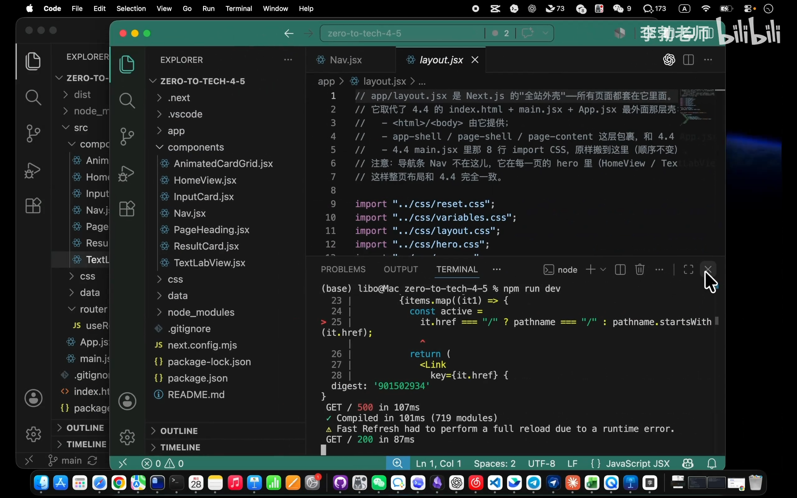
📷 对比组件顶部的 use client 声明
在 B 站中打开 (00:22:00)
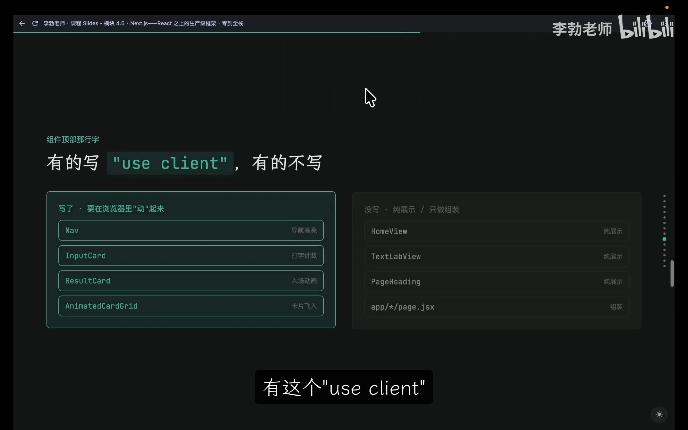
📷 PPT展示哪些组件带 use client 哪些不带
在 B 站中打开 (00:22:25)
通过分类比对，其核心分界线一目了然：
| 组件分类 | 典型组件示例 | 特征与行为 | 运行宿主环境 |
|---|---|---|---|
| 客户端组件 (Client Component) | Nav（高亮交互）、InputCard（输入打字计数）、ResultCard（动画飞入）、AnimatedCardGrid |
依赖鼠标点击、表单输入、浏览器动画、浏览器专属 API（window / localStorage） |
浏览器端（在浏览器执行 JS 事件响应与重绘） |
| 服务端组件 (Server Component, RSC) | HomeView、TextLabView、PageHeading、各级 page.jsx 与 layout.jsx |
纯结构展示、静态数据聚合、只负责布局拼装、无交互事件 | 服务端 / 构建阶段（直接输出静态 HTML 字符串） |
flowchart TD
Start["组件设计判断"] --> Q1{"是否需要用户交互、监听事件<br/>(onClick, onChange) 或浏览器动画？"}
Q1 -- 是 --> Client["标记 'use client'<br/>(客户端组件 Client Component)"]
Q1 -- 否 --> Q2{"是否需要使用 useState, useEffect<br/>等响应式客户端 Hook？"}
Q2 -- 是 --> Client
Q2 -- 否 --> Server["保持默认，无需标记<br/>(服务端组件 RSC)"]
Server --> RenderS["服务端 / 构建期提前静态化生成 HTML"]
Client --> RenderC["代码打包并在浏览器端运行时执行交互"]
2. 为什么服务端组件（RSC）是杀手锏
- 默认即服务端组件：Next.js 中所有未加
'use client'声明的组件默认都在服务器或编译阶段运行。 - 零客户端运行时负担：服务端组件引用的复杂依赖不会被打入客户端 bundle 中，直接在服务端被编译成纯粹的 HTML 文本并投递给浏览器。首屏秒开且爬虫一览无余，彻底根除了传统 SPA 的白屏与 SEO 弊端。
生产构建验证与项目改造实战
(参考时间: 25:34)
1. 验证预渲染输出产物
执行构建命令：
npm run build
控制台终端清晰打印出构建日志，提示静态路由 ○ / 与 ○ /text-lab 均已成功被预渲染为纯静态内容：
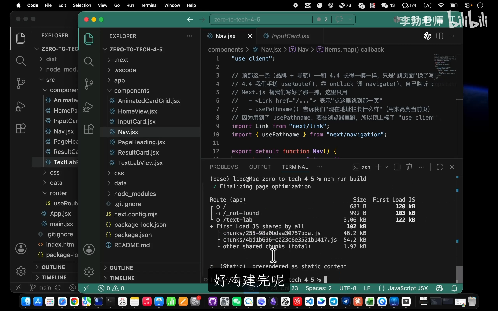
📷 执行 build 命令并观察预渲染输出
在 B 站中打开 (00:25:34)
深入查看 .next/server/app/ 产物目录，可以看到磁盘上真真切切地生成了物理静态文件：
- index.html（对应首页）
- text-lab.html（对应 /text-lab 页面）
- _not-found.html（404 兜底页）
这直接证实了开篇设想：深层路径不再是动态运算出来的虚幻 DOM，而是实实在在躺在服务器磁盘上的物理文件。
2. 实战：老项目原地升级步骤
由于当前的业务项目记录了完整的 Git 演进历程，我们采取“保留历史提交、全量替换代码树”的重构方式：
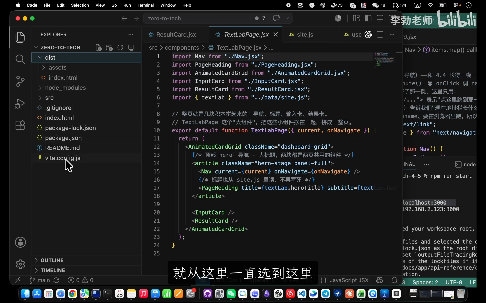
📷 清理旧文件只保留.git目录
在 B 站中打开 (00:28:17)
- 备份并保护历史：删除项目根目录下除
.git/以外的所有旧代码（切勿误删.git/，以完整保留分支与远程提交历史；清理 Mac 系统自动生成的.DS_Store）。 - 导入 Next.js 结构：将新架构中的
app/、components/、styles/、data/、package.json等文件拷贝至项目根目录（无需拷贝构建临时产物与.vscode装饰配置）。 - 依赖安装与验证：
bash npm install npm run dev - Git 归档提交：
bash git add . git commit -m "项目从React升级到Next.js框架"
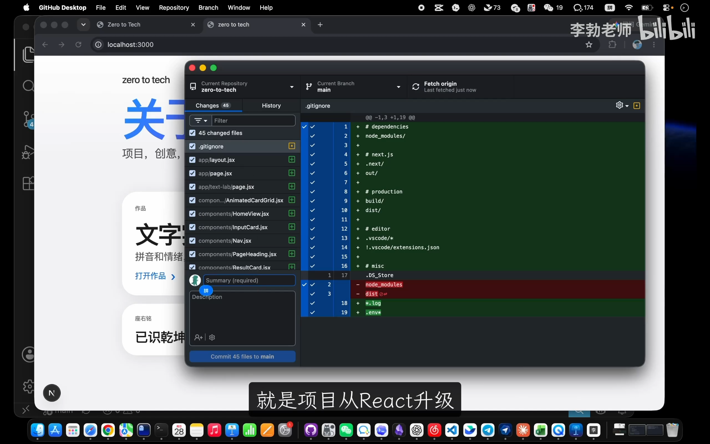
📷 在GitHub Desktop中确认变更并提交
在 B 站中打开 (00:31:09)
补充：快速起步与 Tailwind CSS 前瞻
(参考时间: 32:07)
在未来从零创建全新的 Next.js 项目时，无需手动搭建目录，推荐使用官方 CLI 工具：
npx create-next-app@latest my-next-app
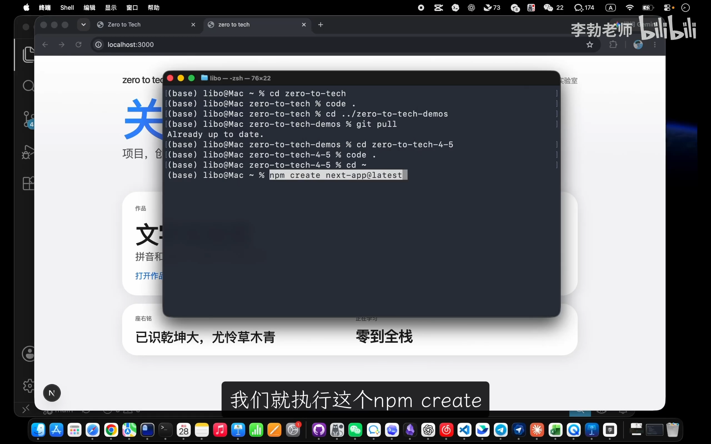
📷 运行 create-next-app 初始化命令演示
在 B 站中打开 (00:32:07)
在交互式选项中，推荐遵循官方默认配置： - TypeScript：类型系统保障代码健壮性。 - Tailwind CSS：现代前端最流行的实用类样式库（Utility-First CSS），通过在 HTML 类名中拼装原子化样式，特别适合由 AI 大模型自动生成和维护页面样式。
本章核心要点总结
(参考时间: 33:53)
mindmap
root((Next.js 核心价值))
为什么需要 Next.js
解决 CSR 404 痛点
解决首屏加载白屏
彻底解决 SPA SEO 缺陷
架构升级
React 之上的生产级外壳
工程化构建全面接管
路由模式
App Router 目录即网址
约定优于配置
page.jsx 与 layout.jsx 协同
渲染革命
默认服务端组件 (RSC)
构建期预渲染真实 HTML (SSG)
use client 声明客户端交互组件
- 痛点溯源：传统 SPA 的空壳 HTML 依赖浏览器端执行 JS 绘制，导致深层 URL 404、首屏白屏慢、爬虫无法读取。
- 架构分工：React 专注组件开发，Next.js 负责组件之外的系统级生产任务（路由、预渲染、SEO 与构建优化）。
- 约定路由：
app/目录结构即 URL 路由映射，消除手写路由逻辑。 - 双组件模型：静态展示走服务端组件（RSC，预渲染生成 HTML），动态响应走客户端组件（
'use client'）。
在下一章节中，我们将探索 Next.js 项目的两种核心部署形态：是将其打包为纯静态 HTML 托管于 Nginx，还是借助 Node.js 服务端容器进行全功能生产部署。